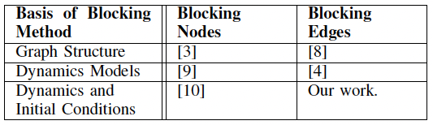

At a glance
- Developed efficient edge-removal algorithms to block social contagions.
- Balanced proactive planning with minimal network disruption.
- Outperformed previous structural approaches in simulations.
Problem
- Stopping harmful contagions requires removing minimal connections.
- Existing methods were computationally heavy or ineffective on complex networks.
- Decision-makers need actionable interventions under resource limits.
Solution
- Designed heuristics leveraging network structure and influence scores.
- Optimized edge selection to minimize contagion reach.
- Tested across synthetic and real networks for robustness.
Impact
- Achieved better containment with fewer interventions than baselines.
- Provided practical guidance for policymakers on contagion blocking.
- Complemented node-focused strategies with edge-centric toolkits.
Role & toolkit
- Led algorithm design and evaluation with academic collaborators.
- Used graph optimization, simulations, and complexity analysis.
- Translated findings into policy-focused playbooks.
Visual highlights

Comparison chart illustrating gains over prior edge-blocking methods.